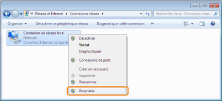
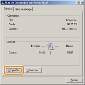
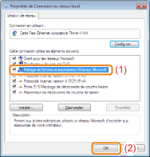

Avant de configurer le serveur d'impression, vérifiez les paramètres de votre environnement réseau en procédant comme suit.
1
Procédez comme indiqué ci-après.

Dans le menu [Démarrer], sélectionnez [Paramètres] → [Connexions réseau et accès à distance].

Dans le menu [Démarrer], sélectionnez [Panneau de configuration], puis cliquez sur [Connexions réseau et Internet] → [Connexions réseau].

Dans le menu [Démarrer], sélectionnez [Panneau de configuration], puis cliquez sur [Afficher l'état et la gestion du réseau] → [Gérer les connexions réseau].


Dans le menu [Démarrer], sélectionnez [Panneau de configuration], puis cliquez sur [Afficher l'état et la gestion du réseau] → [Modifier les paramètres de la carte].

Dans le menu [Démarrer], sélectionnez [Panneau de configuration] → [Connexions réseau] → [Connexion au réseau local].

Dans le menu [Démarrer], sélectionnez [Panneau de configuration], puis double-cliquez sur [Centre Réseau et partage] et sélectionnez [Gérer les connexions réseau].
2
Ouvrez la boîte de dialogue [Propriétés de connexion au réseau local].
Cliquez avec le bouton droit sur l'icône [Connexion au réseau local], puis sélectionnez [Propriétés] dans le menu contextuel.

Cliquez sur [Propriétés].

 Si la boîte de dialogue [Contrôle de compte d'utilisateur] s'affiche Si la boîte de dialogue [Contrôle de compte d'utilisateur] s'afficheCliquez sur [Continuer] ou sur [Oui].
|
3
Vérifiez que la case [Partage de fichiers et imprimantes Réseaux Microsoft] est cochée.
|
(1)
|
Vérifiez que la case [Partage de fichiers et imprimantes Réseaux Microsoft] est cochée.
(Si la case n'est pas cochée, cliquez dessus.)
|
|
(2)
|
Cliquez sur [OK].
|

|
REMARQUE
|
|
Si vous travaillez sous Windows XP
Vous ne pouvez pas configurer le serveur d'impression avec les paramètres par défaut du système d'exploitation (tels qu'ils sont immédiatement après l'installation).
Avant de configurer le serveur d'impression, exécutez l'[Assistant Configuration du réseau] pour activer les paramètres de partage de l'imprimante.
Pour en savoir plus, reportez-vous à l'aide de Windows.
|